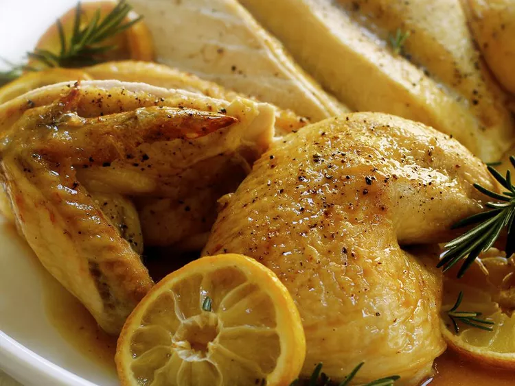

Butterflied Roast Chicken with Lemon and Rosemary

This butterflied roast chicken with lemon and rosemary is tender and juicy,
and there's lots of crispy golden skin to enjoy.
By removing the backbone with a knife or kitchen scissors to flatten the chicken,
it cooks quicker and more evenly and the breast meat doesn't dry out.
Butterflied chicken is especially good on the grill.
Ingredients
- 1 tablespoon olive oil, or as needed
- 1 (3 pound) whole chicken, backbone removed
- kosher salt and ground black pepper to taste
- 1 lemon, sliced into rounds
- 4 sprigs fresh rosemary
- ½ cup white wine
Steps
-
Preheat the oven to 400 degrees F (200 degrees C).
Line a rimmed baking pan with aluminum foil. Place a rack on top of foil.
-
Rub olive oil on both sides of chicken and generously season with salt and black pepper.
Arrange lemon slices and rosemary on the rack and place chicken,
skin-side up, onto the rack.
-
Roast in the preheated oven until no longer pink at the bone and the juices run clear,
45 to 55 minutes. An instant-read thermometer inserted into the thickest part of the thigh,
near the bone should read 165 degrees F (74 degrees C).
-
Transfer chicken to a serving platter and tent a piece of aluminum foil over it.
Discard lemon and rosemary and remove rack.
-
Pour wine into the baking pan and gently loosen the bits of food in the pan with
a wooden spoon, being careful not to tear the foil.
Strain pan juices into a saucepan and bring to a boil;
cook until sauce is slightly reduced, about 5 minutes. Spoon sauce over chicken.
Tips
Chicken broth can be used in place of white wine.